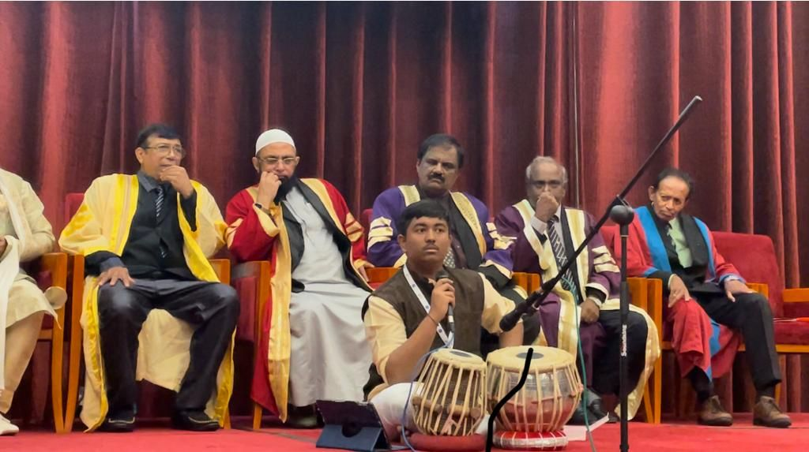
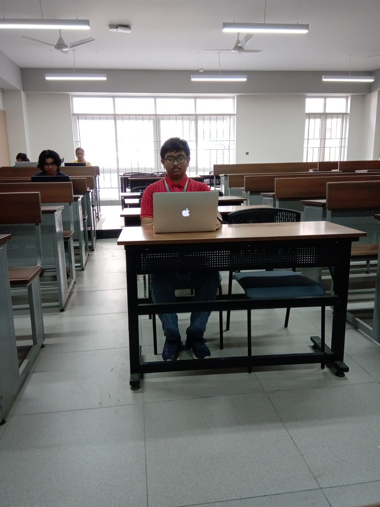

Thoughts & Blogs
A reflective space containing thoughts, observations, blogs, experiences, spirituality, music, learning, technology, culture, and personal reflections.
Posts & Moments

KANTI — Circuitrix Presentation
Presented the flip-flop project KANTI at RV University's Circuitrix event with team BHASWAT, expressing gratitude to mentors and collaborative learning.
Read Post

Sri Lanka Interaction
Interaction with former Speaker of Parliament of Sri Lanka, Deshabandu Karu Jayasuriya, during Indo–Sri Lanka cultural events.
Read Post
Blogs & Writings

The Transformative Power of Web Development
Thoughts on how web development transformed learning, problem solving, execution, and creative thinking.
Read Blog
The Enlightening Influence of Daily Saraswathi Puja
A reflective piece on discipline, spirituality, learning, creativity, and inner stillness.
Read Blog